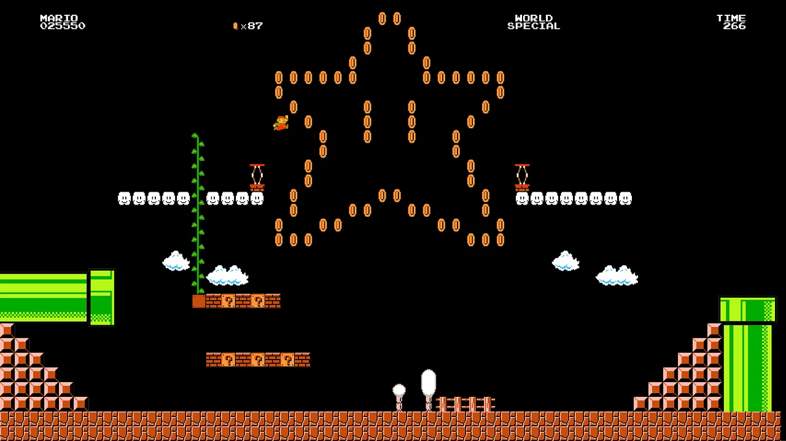
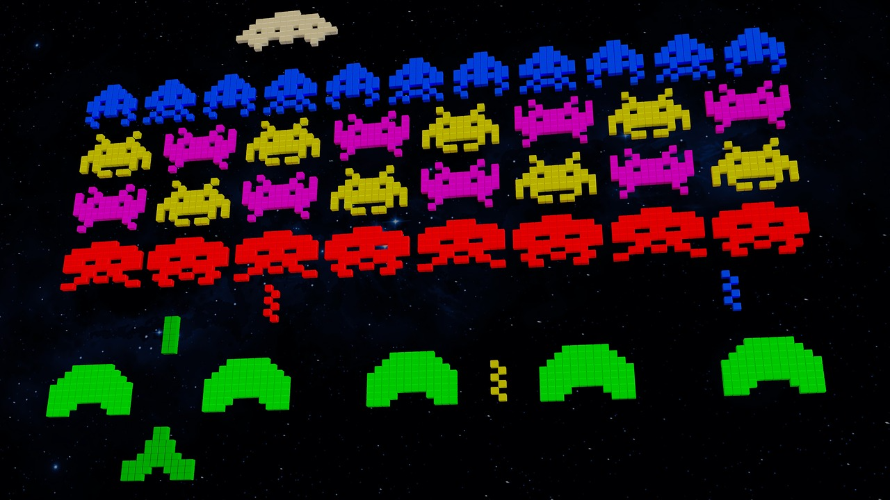

PLAYER 1: Nossa História
A NekoArcade nasceu da paixão pelo universo gamer e da vontade de criar um espaço onde jogos, nostalgia e cultura geek se encontrassem em um só lugar. Tudo começou quando seus criadores perceberam que muitos fãs de videogames buscavam mais do que apenas produtos — queriam uma experiência que transmitisse a energia dos arcades clássicos, das aventuras retrô e da conexão entre jogadores. Mais do que uma simples loja geek, surgiu o sonho de criar um ambiente imersivo, divertido e acolhedor para todos os apaixonados por games.

Com criatividade e dedicação, a NekoArcade começou sua jornada reunindo consoles, periféricos, colecionáveis e acessórios inspirados nas maiores franquias do universo gamer. Cada detalhe foi pensado para oferecer uma experiência única, sempre valorizando a nostalgia dos jogos clássicos e a inovação da nova geração. Aos poucos, a loja conquistou espaço entre jogadores e colecionadores que buscavam produtos diferenciados e um ambiente que realmente representasse a cultura geek.

Hoje, a NekoArcade continua movida pela mesma paixão que deu início à sua história: conectar pessoas através dos games, da diversão e da nostalgia. Cada produto, cada coleção e cada detalhe da loja fazem parte de uma missão maior — transformar a experiência gamer em algo ainda mais especial para cada cliente. Porque, na NekoArcade, acreditamos que jogar vai muito além do entretenimento: é criar memórias, viver aventuras e compartilhar momentos inesquecíveis.